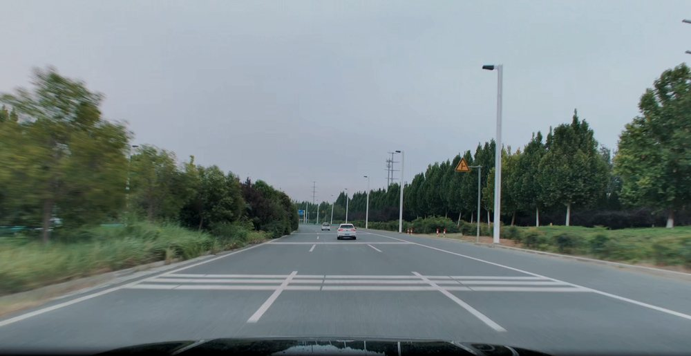
前12:3410月1日 13:28
完整
Smart Drive Media · 行程列表 4 个方向 + 剪辑页层次加强 + 图标系统
6 段行程 · 共 52 分 41 秒

前12:34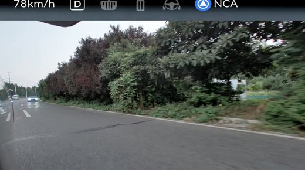
左后08:12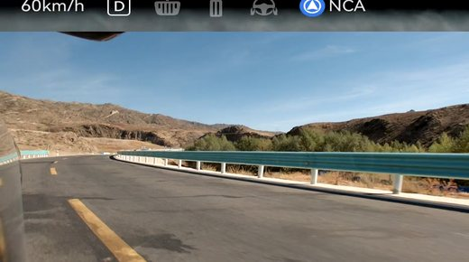
后05:40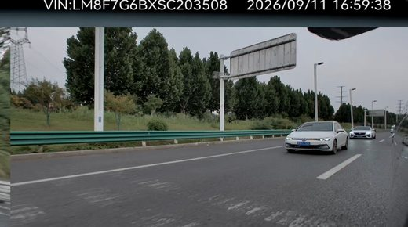
右前21:05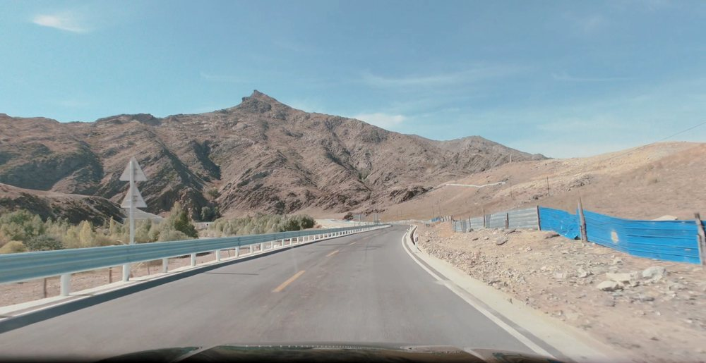
前03:18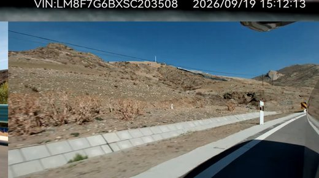
右后01:52把首页拉到剪辑页已经在用的那套语言上：page_bg #F7F6F3 打底，白卡 + 1px 细线 + 一层极轻的暖色投影，强调色只留琥珀。卡片从「上封面下文」改成「左图右文」，日期做组头。
#181818 / #FF7A00 / #282828）换成 $r('app.color.*')，和剪辑页共用一套令牌#0A59F7，状态只用绿（完整）/ 黄（缺机位）/ 灰（哨兵）三种低饱和底一屏看到的行程从 4 张变成约 2.5 张，滚动变长。换来的是每张卡能直接读出「哪天的、多长、机位全不全」。
6 段行程 · 共 52 分 41 秒
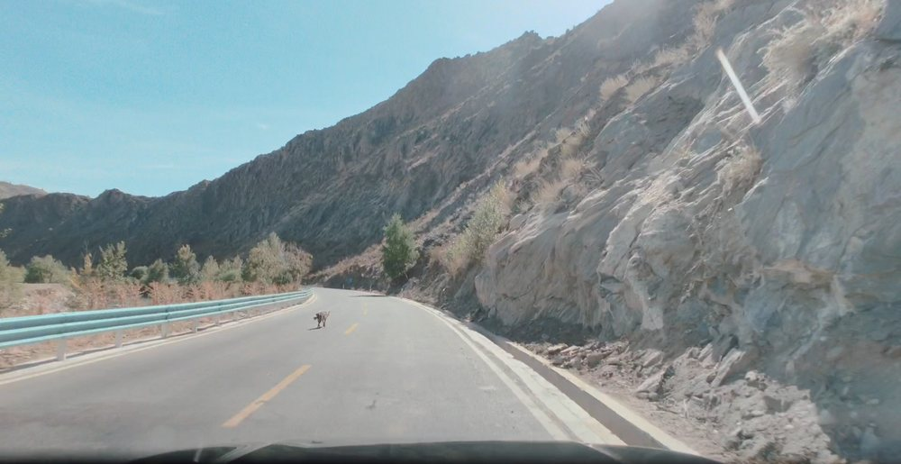
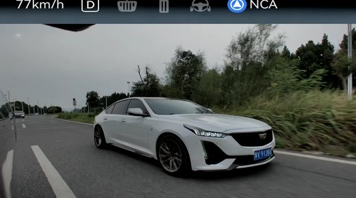
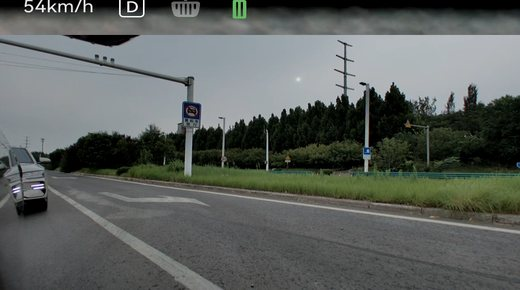
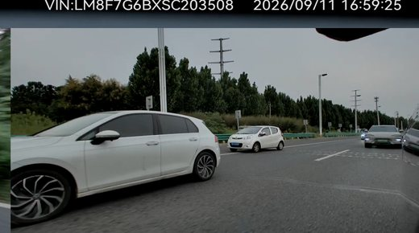
保留首页现在的深色调，但把它从「中性黑」换成「有色调的深色」——#14120F，和剪辑页画面区的 stage_bg 同源。卡片改成封面为主：大图铺满，底部渐变把标题压进画面里。
#181818 → #14120F，带一点暖调，不再是纯中性灰#D98324，替掉现在的橙 #FF7A00 和蓝 #0A59F7首页深、剪辑页浅，两页不是一套皮肤。要么接受这个对比（首页像「车库」，剪辑页像「工作台」），要么以后把剪辑页也翻成深色。
按录制时间排列 · 点任意一格进剪辑
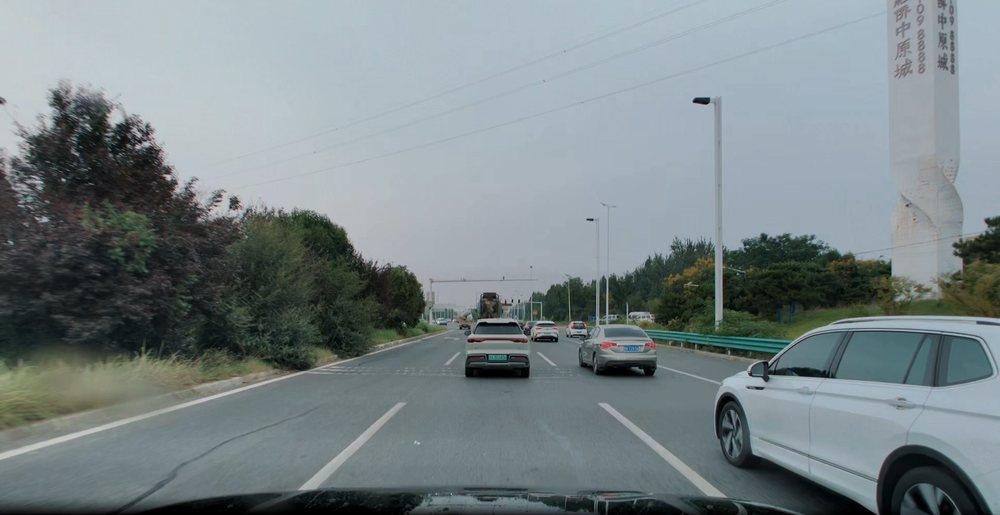
前 0:00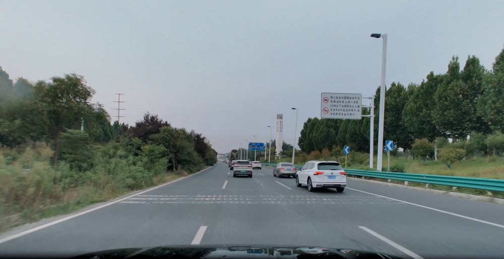
前 0:00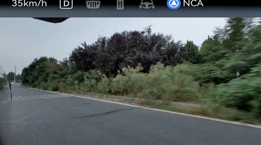
后 14:00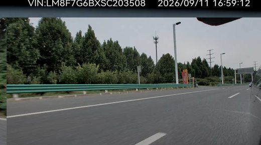
右后 1:40不再用网格。首页变成一条竖向时间轴：左边是录制时刻，右边是一卷横向胶卷，胶卷里按时间顺序排着这一程的片段缩略图，点哪一格就进哪一段。
改动最大：数据要按天分组，还要给每一段算一个缩略图。而且横向胶卷在窄屏上要滚动，比网格多一层操作。
6 段行程 · 2 段待剪辑
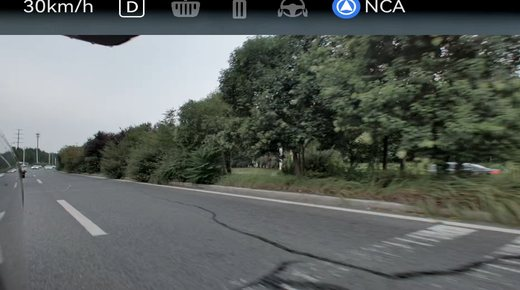
打破「等大网格」——那正是它看起来像原型图的原因。最近一段行程占通栏大格，中间插两个数字统计格，哨兵模式单独用一张深色通栏格区分，其余小格。
需要更多状态数据（哪些已导出、哪些待剪辑），而且格子大小不一时要小心不要排成「中间空一格」。
左＝现在的样子，右＝加强后的样子。结构、层级、顺序、间距、圆角、尺寸全部保持原样：PlayerCard 仍然是「画面区 + 参数行 + 片段轨道」三件套装在一张 16 圆角卡里，模板行仍然裸在卡外横滚。动的只有——投影、画面区的表面处理、进度条的可读性，以及把 5 个文字字形换成一套矢量图标。
| 部位 | 现状 | 加强后 |
|---|---|---|
| PlayerCard | 只有 1px 描边，白卡贴在 #F7F6F3 上，和背景同一个平面 | 加一层 --shadow-card，卡片从页面浮起，和页面拉开一层 |
| 画面区 | 一块纯 #14120F 平色矩形，边界只靠颜色突变 | 内描边 1px 白 7% + 顶部琥珀微光 + 极轻颗粒，读起来像「一块屏幕」而不是一个洞 |
| 进度条 | 2px 灰线，没有已播填充，看不出播到哪 | 3px，已播段填琥珀，滑块 16px 带一圈外环，暗底上终于看得见 |
| 返回 / 播放 / 剪刀 / 关闭 | 直接写的 ← ▶ ✂ ✕ 字符，字重与基线各不相同 | 统一 1.7 描边、round 端点圆角的矢量图标，四个字形的视觉重量一致 |
| 模板缩略图 | emoji：📹📹 👁️👁️👁️ ⬅️➡️ 🎬 📹，三只眼睛还会挤 | 按 previewSlots 画的真实分屏示意图，琥珀格 = 主视角 |
| 模板行 | 横滚卡片直接裸在卡外，没有上下文 | 上方加一行 模板 · 1920×2160 分区标签 ← 唯一一处新增 |
AppConstants.ets:20 给 T3 的名字是「左右盲区」，但 Models.ets:155 里的 title 是「侧向防开门杀」；T5 是「单视角」（AppConstants.ets:26）对「单前视」（Models.ets:211）。
TemplateStrip.ets:39-42 优先用 getTemplateUiNameById，所以界面上显示的是前者。已按你的决定统一到前者（Models.ets 的 title 改成「左右盲区」「单视角」），并在 tools/offline-test.mjs 加了一条文本对账守卫，两处再漂移就会直接红。
这是「像一个简易工作台 / 原型图」最直接的来源。功能字形用文本字符写，字重、基线、留白由系统字体决定，彼此不成套；emoji 更是连外观都由机型决定。
| 位置 | 字符 | 当前实现 | 判定 |
|---|---|---|---|
| 返回 | ← | Editor.ets:568 Text('←') | 文本字符 · 基线随字体浮动 |
| 播放 | ▶ | Editor.ets:621 Text('▶') | 文本字符 · 视觉重量偏轻 |
| 剪刀 | ✂ | SegmentTrack.ets:211 Text('✂') | emoji 变体 · 各机型渲染不同 |
| 关闭 | ✕ | SegmentParamRow.ets:76 Text('✕') | 文本字符 · 与描边图标不成套 |
| 模板图标 | 📹 | AppConstants.ets:47 getTemplateIconById() | emoji · 外观不可控 |
| 音量 | SegmentParamRow.ets:41 Path().commands(...) | 真矢量 · 已经是正确做法 |
统一 24×24 viewBox、1.7 描边、round 端点与圆角、无填充（播放/暂停除外）。不需要新增任何资源文件 —— 照 SegmentParamRow.ets:41 已有的写法用 Path().commands() 画即可，这样还能跟随主题色。
每张都按 Models.ets 里真实的 previewSlots 画，所以缩略图和进画面后看到的分屏必然一致——这是 emoji 永远做不到的。
上下堆叠。上=前视，下=后视，画幅最高。
倒品字。上格占 2/3 高，下方左右各一格。
左右分屏，两路等宽，32:9 超宽画幅。
横向三分屏，中间 2× 宽。两侧各裁一半。
固定前视，单格铺满，标准 16:9。
功能图标一律走矢量，不要用 AI 位图。它们要跟随文字颜色（浅色页 text_secondary、深色画面区 card_bg）、要能改尺寸、要能统一描边粗细——位图三样都做不到，而且在深浅两套底色上会糊。上面那套 8 个图标直接写 Path().commands() 就行，零资源、可换色。
AI 位图适合两处：① 桌面 App 图标（必须是位图，系统只收图片）；② 空状态 / 导出完成的插画（要的是氛围，不是精确性）。下面三个 prompt 可以直接用。
插画生成后放进 entry/src/main/resources/base/media/，用 Image($r('app.media.xxx')) 引用。若想做单色可换色版本，导出时选纯单色 SVG 而不是 PNG，ArkUI 的 fillColor() 才能对它生效。
取变体 1 的 16:9 —— 最接近行车记录仪的原始画幅（前/后视 1920×1080，正好 16:9）。左轨换成方案 C 的竖向时间轴，卡面上不留任何文字，机位数、分辨率和时长全部拿掉。
| 部位 | 旧（Index.ets 现状） | 新 |
|---|---|---|
| 时间 | 卡面标题行 10月1日 13:28 | 搬到左轨，13:28 13.5px 700，等宽数字不抖动 |
| 机位齐全度 | 卡面 6 机位 · 1080P + 完整 徽章 | 删除。缺机位时左轨圆点变空心 |
| 分辨率 | 卡面 1080P | 删除。它不该出现在「找哪段来剪」这个决策里 |
| 时长 | 缩略图右下角 12:34 | 删除 —— 与左轨时间重复 |
| 画幅 | 左缩略图 125×71（约 16:9 但被压扁） | 整卡 16:9，与原始视频同比例，不变形 |
| 日期分组 | 占 34px，13px 字号 | 时间轴上的分段头，压到 30px，12px 字号 |
| 色彩 | 沿用 A 的暖白令牌 | 不变（#0A59F7 那个蓝色徽章随徽章一起删掉） |
你说的问题是「切换不同模板会上下挤压」。根因在 Editor.ets：画面区用的是 Stack().aspectRatio(getPreviewAspectRatio())，比例跟着模板走 —— 模板一换，播放器高度就变，下面的参数行和片段轨道跟着跳。
内容宽按 326px 算，5 个模板的自然高度是 366 / 275 / 92 / 92 / 183 px —— 最大和最小差 4 倍。切一次模板，下面所有内容就上下弹一次。
改法：把画面区写死成 16:9，模板组合在里面按 Contain 缩放居中，四周留 stage_bg 黑边。播放器永远 183px，模板再怎么换，下面的参数行和片段轨道一动不动。
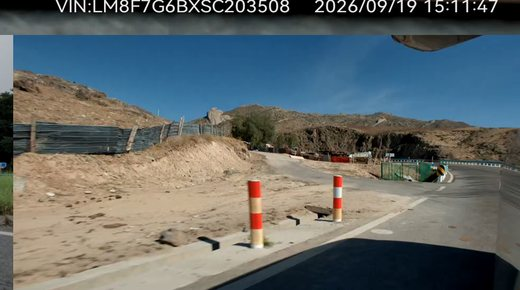
右后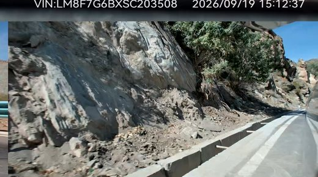
右后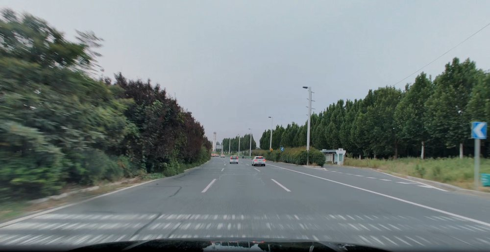
前按你给的参考图重做：片段不再是「一条底色 + 两条竖线」，而是有内容、有手柄的胶囊 —— 片段里填真实画面帧，用一小段短杆把圆头手柄连到胶囊边上。手柄只在选中的那个片段上出现，其余片段保持干净。片段内不加播放指针。
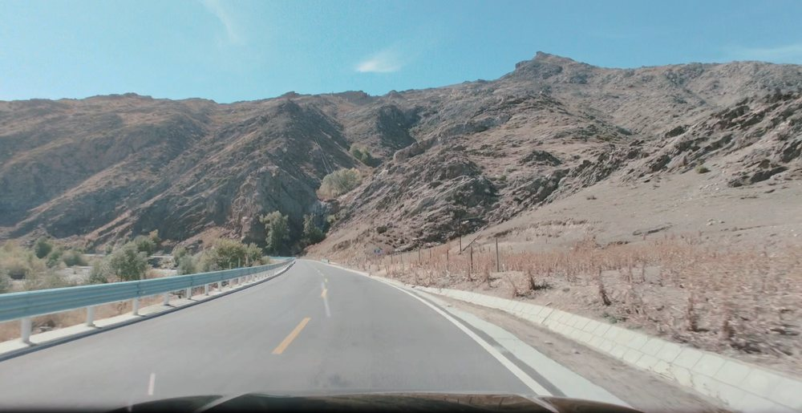
片段 1 · 0:00–4:10圆头直径 22px，比轨道高（52px）小一半，所以不会把片段撑开。短杆是一段 13×2.5px 的横线，把圆头连回胶囊边缘 —— 这截短杆是参考图里最关键的一笔，没有它圆头就像浮在空中。
只在选中时出现。未选中的片段一根手柄都不画 —— 轨道上同时有 4–6 个片段时，满屏手柄会把画面帧糊掉。选中片段：圆头与描边一起变 amber #D98324，再加一圈 1px 外发光。
video 组件 seek 后截图，或直接让 SingleTrackController 吐 4 张缩略图）。每个片段放 4 格，格与格之间 1px 深色缝 —— 这就是「胶卷」感的来源。片段很短时（< 2s）退化成纯色底 + 文字，不要硬塞帧。
现在 App 里 6 个「图标」其实是文本字符或 emoji（← ▶ ✂ ✕ 和模板行的 📹👁️⬅️➡️🎬），字重、基线、留白都由系统字体决定，彼此不成套，换台设备就变样。下面是我按同一套规格画出来的图标 —— 24px 网格、1.75px 描边、圆头圆角、currentColor，全部可以直接落成 ArkUI 的 Path/Shape，不需要任何位图资源。
currentColor，换底不用换图。getTemplateResolutionById 的宽高比走，改比例时图标也跟着对。
viewBox 0 0 24 24，实际渲染 18 / 19 / 20 / 22 / 26px 五档。图标永远按 24 的整数比例缩放，不会糊。stroke-width 1.75，圆头 round、圆角 round。这是「不像线条图标库那样发飘、也不像 Material 那样厚重」的那条线。currentColor，跟随父级 fontColor。浅色底用 #1C1B18/#57534A，深色底用 #F0FFFFFF，换底不换图。play 和 more 用实心 —— 这两个形状太简单，描边会显脏。Path().commands(...) + Shape，或 Image($r('app.media.ic_back')).fillColor(...) 走 SVG 资源。两者都不需要位图。